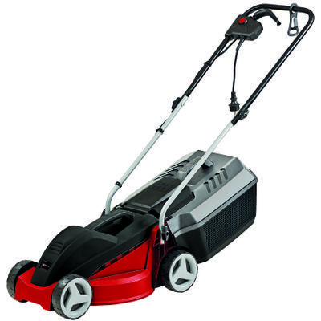

Einhell GC-EM 1030/1
El Einhell GC-EM 1030/1 es un cortacésped eléctrico potente y eficiente, ideal para uso doméstico en jardines de tamaño pequeño y mediano. Con su motor de 1000 W y un ancho de corte de 30 cm, este cortacésped proporciona un rendimiento excelente en cualquier tipo de césped. Además, cuenta con un sistema de ajuste de altura de corte en 3 posiciones, que permite adaptar el corte a tus necesidades específicas.
El diseño compacto y ligero del Einhell GC-EM 1030/1 lo convierte en una opción ideal para usuarios que buscan un cortacésped fácil de transportar y almacenar. El sistema de peine para césped asegura un corte limpio y uniforme, incluso cerca de los bordes.
No esperes más y adquiere tu Einhell GC-EM 1030/1 para disfrutar de un jardín perfecto en todo momento.
Compra ahora